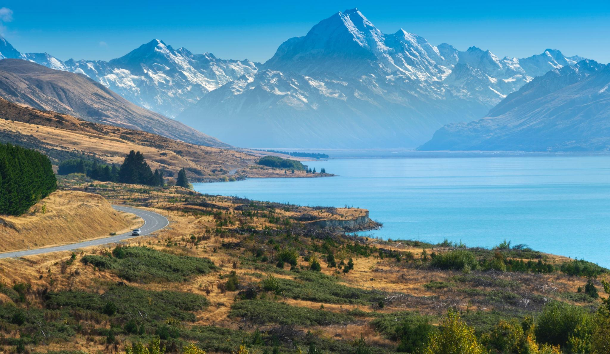
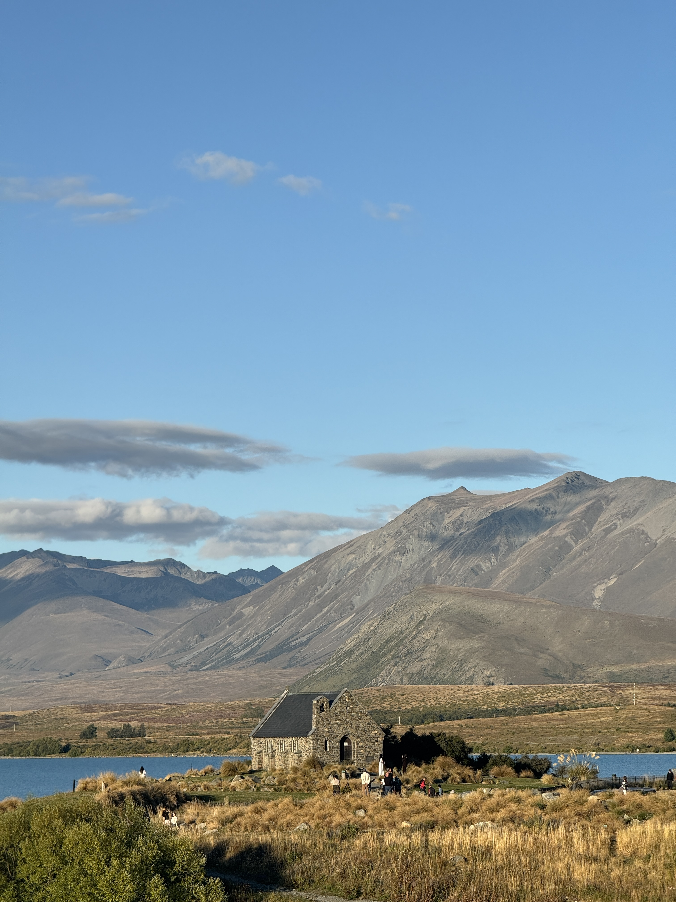
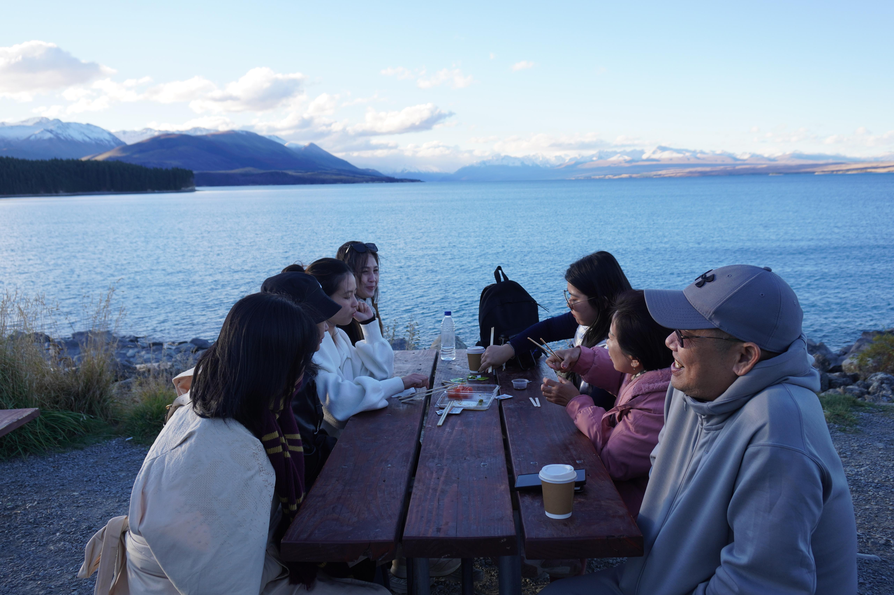
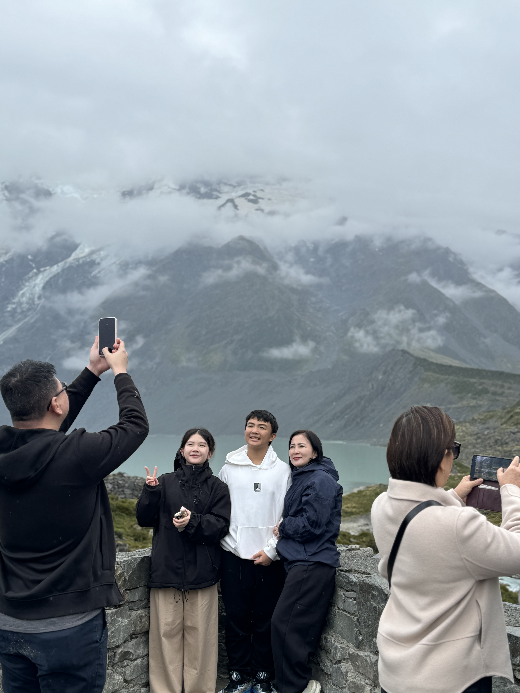
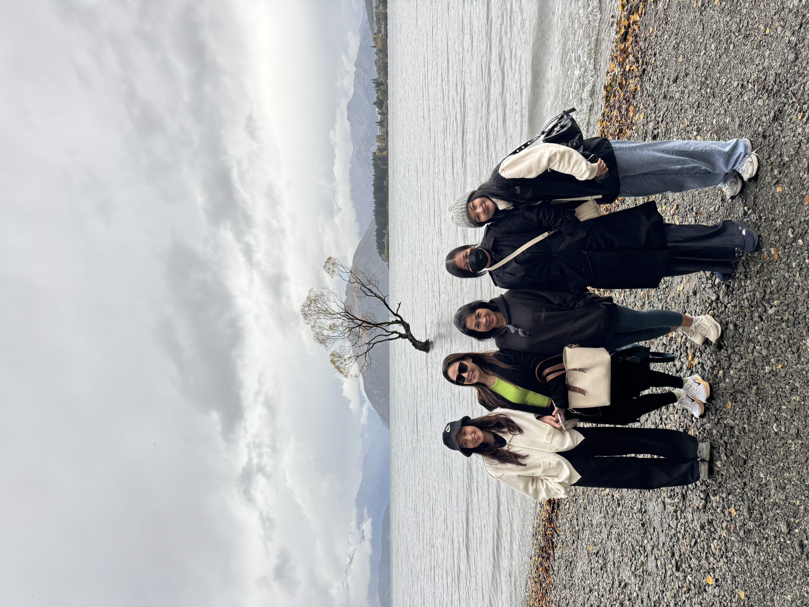
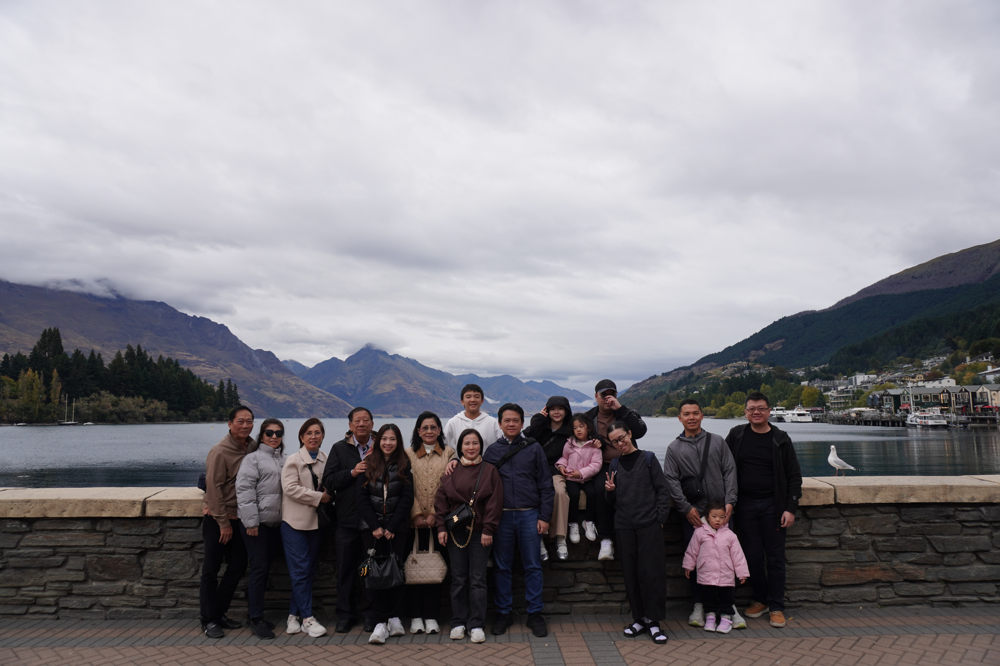
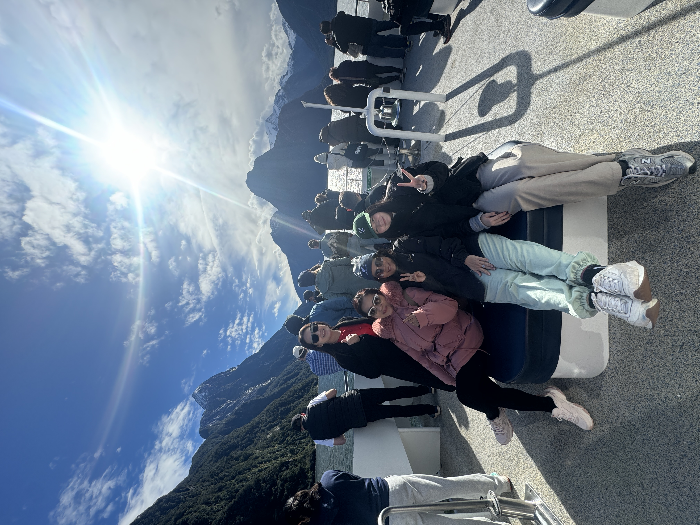
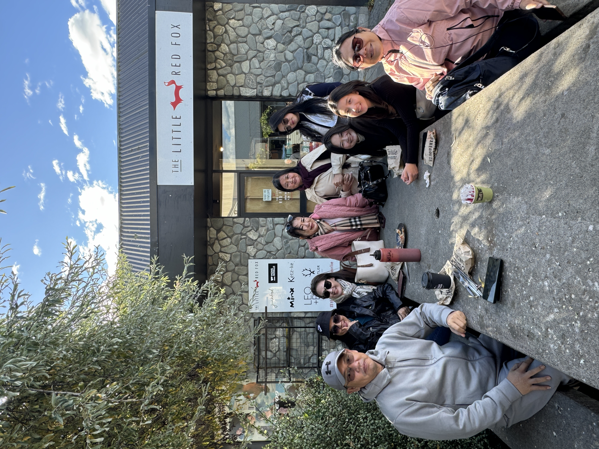
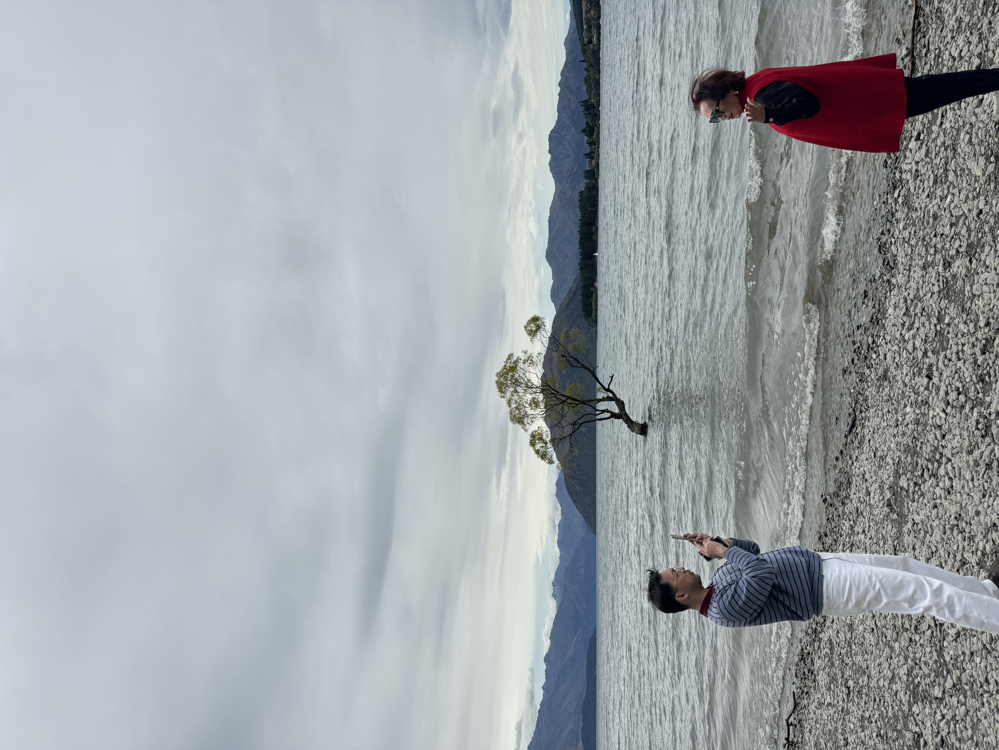
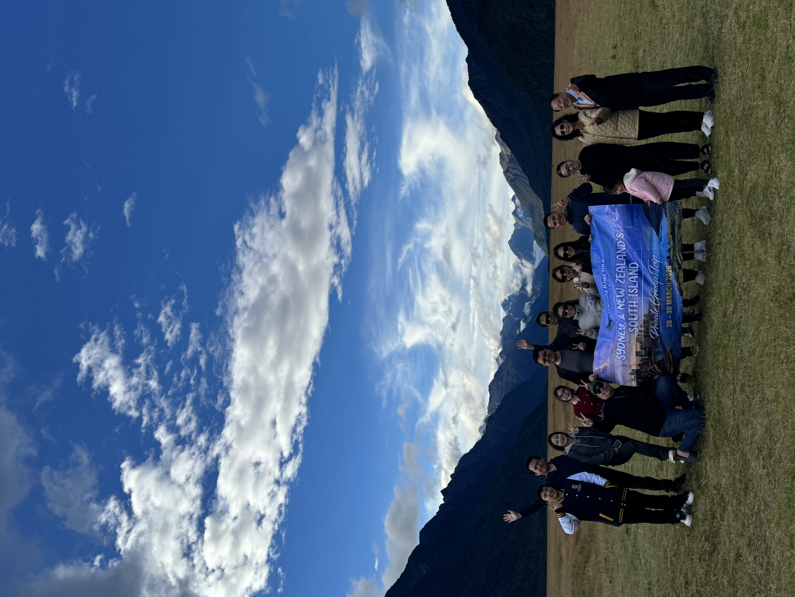

8 hari menikmati South Island New Zealand: Christchurch, Lake Tekapo, Lake Pukaki, Mount Cook, Wanaka, Queenstown, dan Milford Sound.
Mulai
IDR 31,5 Juta
Durasi
8D6N
Group
Small Group
Banyak orang ingin ke New Zealand, tapi bingung soal rute, jarak antar kota, booking hotel, tiket, visa, hingga transportasi selama di sana. Trip ini dibuat supaya kamu bisa menikmati perjalanannya tanpa harus ribet mengatur semuanya sendiri.
Fokus ke destinasi utama South Island dengan alur perjalanan yang nyaman.
Lebih personal, lebih fleksibel, dan tidak terasa seperti rombongan besar.
Kami dapat membantu arahan dan proses pengajuan visa New Zealand.
Beberapa momen utama yang akan kamu rasakan selama perjalanan.

Danau biru ikonik dengan suasana tenang dan pemandangan khas South Island.

Menikmati salmon segar dengan latar danau biru dan pegunungan.

Scenic route menuju salah satu kawasan pegunungan paling indah di New Zealand.

Photo stop di That Wanaka Tree dan menikmati suasana kota kecil yang cantik.

Waktu bebas untuk eksplor kota, mencoba aktivitas opsional, atau bersantai di tepi danau.

Cruise menyusuri fjord dengan air terjun, tebing megah, dan pemandangan Fiordland.
Versi ringkas agar mudah dibaca. Detail lengkap dapat dikirim melalui WhatsApp.
Penerbangan menuju Christchurch dengan transit. Overnight on board.
Tiba di Christchurch, city tour singkat, makan malam bersama, dan istirahat.
Perjalanan menuju Fairlie, singgah kuliner lokal, lalu menikmati Lake Tekapo.
Panorama Mt John, Lake Pukaki, salmon experience, dan scenic view Mount Cook.
Singgah di High Country Salmon, photo stop di Wanaka, lalu tiba di Queenstown.
Full day trip menuju Milford Sound dan menikmati cruise di kawasan Fiordland.
Waktu bebas untuk explore Queenstown, optional activity, Glenorchy, atau Arrowtown.
Check out dan penerbangan kembali ke Jakarta. Overnight on board.
Pilih sesuai kebutuhan perjalanan kamu.
Termasuk tiket pesawat internasional, transportasi, hotel, dan tiket wisata sesuai acara.
IDR 31.500.000
per orang
Untuk peserta yang sudah memiliki tiket pesawat sendiri ke/dari New Zealand.
IDR 19.800.000
per orang
Tambahan untuk peserta yang ingin menginap sendiri dalam 1 kamar.
IDR 6.500.000
per orang
Visa Assistance tersedia
Garuda Kiwi Tour dapat membantu proses pengajuan visa dengan biaya terpisah.
Slot terbatas. Hubungi kami untuk update ketersediaan terbaru.
Garuda Kiwi Tour membantu peserta dari tahap persiapan, arahan perjalanan, koordinasi hotel, transportasi, hingga kebutuhan tambahan seperti visa assistance dan eSIM.
Dipandu oleh Tour Leader berbahasa Indonesia.
Cocok untuk first-timer ke New Zealand.
Rute dibuat agar tetap scenic, nyaman, dan tidak terlalu terburu-buru.



Belum. Visa New Zealand tidak termasuk dalam harga paket, namun Garuda Kiwi Tour dapat membantu proses pengajuan visa dengan biaya terpisah.
Makan siang dan makan malam belum termasuk. Peserta dapat memilih kuliner sesuai selera selama perjalanan.
Ya, itinerary dibuat nyaman untuk keluarga, pasangan, maupun peserta yang baru pertama kali ke New Zealand.
Deposit 40% saat pendaftaran untuk mengamankan kursi dan hotel. Pelunasan dilakukan paling lambat 30 hari sebelum keberangkatan.
Urutan kunjungan dapat disesuaikan dengan kondisi cuaca, waktu tempuh, dan kondisi lapangan tanpa mengurangi isi utama perjalanan.
Harga dapat berubah sewaktu-waktu mengikuti ketersediaan seat, kurs, pajak maskapai, harga BBM, dan kebijakan terkait. Detail syarat & ketentuan lengkap akan diberikan dalam dokumen resmi sebelum pembayaran deposit.
Tanya slot, minta itinerary lengkap, atau konsultasi visa dan rencana perjalanan kamu bersama Garuda Kiwi Tour.